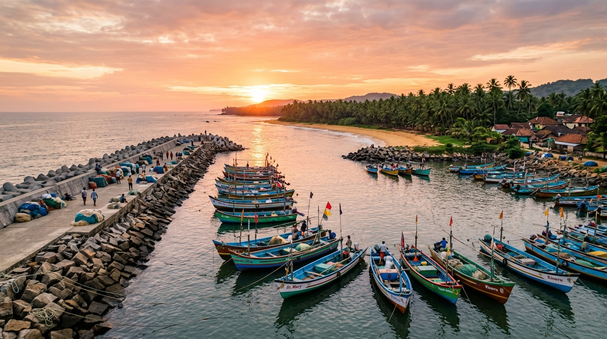
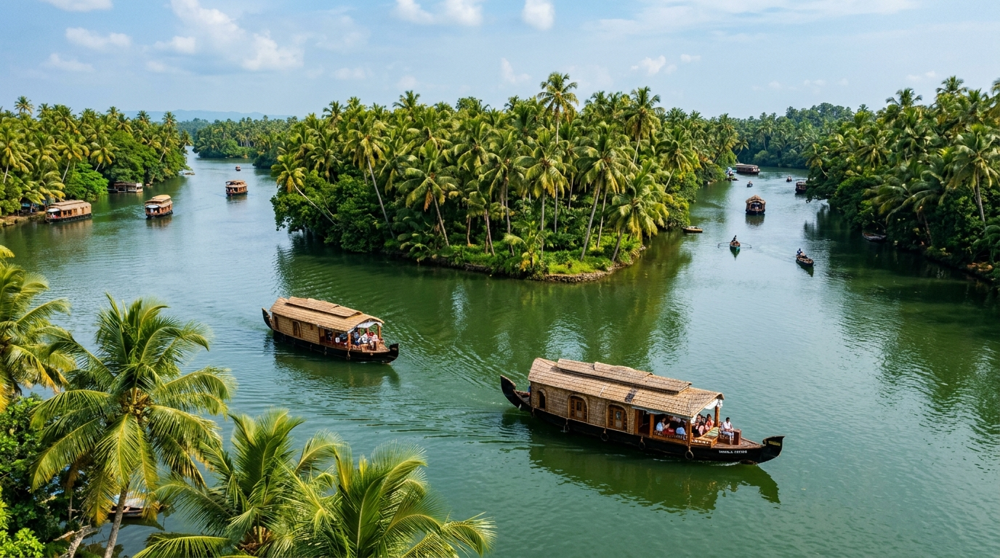
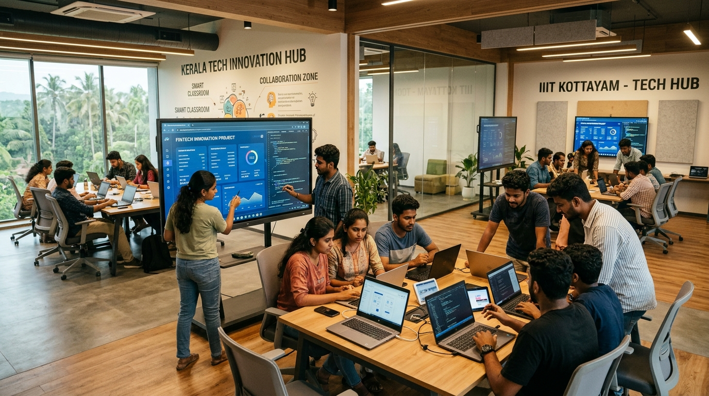

Coastal Belt Protection & Fisherfolk Welfare
Modern sea-wall reinforcements, high-efficiency boat landing centers, subsidized welfare packages, and disaster alert radio systems across Kasaragod's coast.
Representing the people of Thrikkaripur in Kasaragod district, Kerala. Dedicated to public welfare, transparent governance, rapid constituency infrastructure, and championing citizen aspirations in the Kerala Legislative Assembly.

Modern sea-wall reinforcements, high-efficiency boat landing centers, subsidized welfare packages, and disaster alert radio systems across Kasaragod's coast.

Transforming Valiyaparamba backwaters into an eco-friendly global destination with solar ferry services, footbridge linkages, and mangrove protection.

Modernizing government schools with digital learning labs, competitive exam incubation cells, robotics training, and high-speed public libraries.
Weekly ward visits (ജനസമ്പർക്കം) across all 6 Grama Panchayats to understand grassroots concerns.
Drafting technical project reports with local Panchayat leaders, engineers, and community stakeholders.
Raising urgent matters in Niyamasabha via Submissions, Calling Attention motions, and budget demands.
Strict timeline enforcement of MLA-ADS special development schemes and inter-departmental clearances.
Project dedication to the public with transparent progress reports and open citizen satisfaction audits.
Public service is not an entitlement of office; it is a sacred covenant of trust. My highest duty is to ensure that the aspirations, struggles, and hopes of every family in Thrikkaripur resonate with strength and dignity in the Kerala Legislative Assembly.
The MLA's office is open and accessible to all residents of Thrikkaripur. Whether you need to reach out directly, request assistance, or share development recommendations, we are at your service.